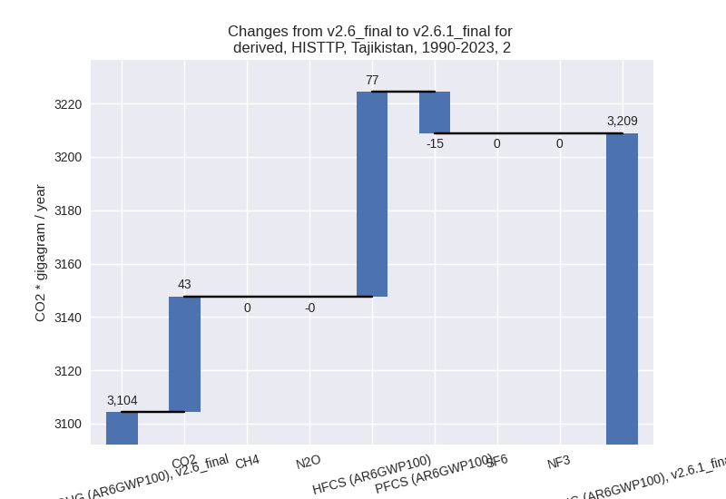

Changes in PRIMAP-hist v2.6.1_final compared to v2.6_final for Tajikistan
2025-03-19
Johannes Gütschow
Change analysis for Tajikistan for PRIMAP-hist v2.6.1_final compared to v2.6_final
Overview over emissions by sector and gas
The following figures show the aggregate national total emissions excluding LULUCF AR6GWP100 for the country reported priority scenario. The dotted linesshow the v2.6_final data.
The following figures show the aggregate national total emissions excluding LULUCF AR6GWP100 for the third party priority scenario. The dotted linesshow the v2.6_final data.
Overview over changes
In the country reported priority scenario we have the following changes for aggregate Kyoto GHG and national total emissions excluding LULUCF (M.0.EL):
- Emissions in 2023 have changed by 40.7%% (5976.57 Gg CO2 / year)
- Emissions in 1990-2023 have changed by -9.0%% (-1279.23 Gg CO2 / year)
In the third party priority scenario we have the following changes for aggregate Kyoto GHG and national total emissions excluding LULUCF (M.0.EL):
- Emissions in 2023 have changed by 1.3%% (238.92 Gg CO2 / year)
- Emissions in 1990-2023 have changed by -0.3%% (-42.32 Gg CO2 / year)
Most important changes per scenario and time frame
In the country reported priority scenario the following sector-gas combinations have the highest absolute impact on national total KyotoGHG (AR6GWP100) emissions in 2023 (top 5):
- 1: 1.A, CO2 with 4377.53 Gg CO2 / year (129.9%)
- 2: M.AG.ELV, N2O with 1073.25 Gg CO2 / year (149.0%)
- 3: 3.A, CH4 with -908.34 Gg CO2 / year (-16.0%)
- 4: 4, CH4 with 538.57 Gg CO2 / year (39.7%)
- 5: 1.A, CH4 with 452.83 Gg CO2 / year (6312.6%)
In the country reported priority scenario the following sector-gas combinations have the highest absolute impact on national total KyotoGHG (AR6GWP100) emissions in 1990-2023 (top 5):
- 1: 2, PFCS (AR6GWP100) with -1279.50 Gg CO2 / year (-60.4%)
- 2: 4, CH4 with 502.91 Gg CO2 / year (56.8%)
- 3: 3.A, CH4 with -461.76 Gg CO2 / year (-12.7%)
- 4: M.AG.ELV, N2O with -258.64 Gg CO2 / year (-16.5%)
- 5: 1.A, CH4 with 221.58 Gg CO2 / year (1703.4%)
In the third party priority scenario the following sector-gas combinations have the highest absolute impact on national total KyotoGHG (AR6GWP100) emissions in 2023 (top 5):
- 1: 4, CH4 with -286.29 Gg CO2 / year (-17.4%)
- 2: 2, HFCS (AR6GWP100) with 278.41 Gg CO2 / year (inf%)
- 3: 3.A, CH4 with 221.36 Gg CO2 / year (4.4%)
- 4: 2, CO2 with 215.21 Gg CO2 / year (10.1%)
- 5: 4, CO2 with 152.41 Gg CO2 / year (inf%)
In the third party priority scenario the following sector-gas combinations have the highest absolute impact on national total KyotoGHG (AR6GWP100) emissions in 1990-2023 (top 5):
- 1: 4, CH4 with -219.69 Gg CO2 / year (-19.5%)
- 2: 4, CO2 with 112.00 Gg CO2 / year (inf%)
- 3: 2, HFCS (AR6GWP100) with 76.72 Gg CO2 / year (inf%)
- 4: 1.A, N2O with -66.92 Gg CO2 / year (-80.8%)
- 5: 1.B.1, CH4 with 64.94 Gg CO2 / year (26.0%)
Notes on data changes
Here we list notes explaining important emissions changes for the country.
- CRT data from BTR1 covering 1990-2022 has been added. It replaces
and extends NC3 and DI data.
- The new data has impacted emissions for several sectors and gases with high relative and absolute changes. The new data looks much better regarding internal consistency especially in the agricultural sector.
- The new data also affects 1990 and through harmonization pre-1990 emissions.
- Higher LULUCF CO2 emissions come directly from the new CRT data.
- Changes in the TP time-series come from updated EDGAR and FAO data. FAO has adjusted data for the latest years while EDGAR has updated full time-series with the main change coming from the waste sector.
Changes by sector and gas
For each scenario and time frame the changes are displayed for all individual sectors and all individual gases. In the sector plot we use aggregate Kyoto GHGs in AR6GWP100. In the gas plot we usenational total emissions without LULUCF.
country reported scenario
2023
1990-2023
third party scenario
2023
1990-2023

Detailed changes for the scenarios:
country reported scenario (HISTCR):
Most important changes per time frame
For 2023 the following sector-gas combinations have the highest absolute impact on national total KyotoGHG (AR6GWP100) emissions in 2023 (top 5):
- 1: 1.A, CO2 with 4377.53 Gg CO2 / year (129.9%)
- 2: M.AG.ELV, N2O with 1073.25 Gg CO2 / year (149.0%)
- 3: 3.A, CH4 with -908.34 Gg CO2 / year (-16.0%)
- 4: 4, CH4 with 538.57 Gg CO2 / year (39.7%)
- 5: 1.A, CH4 with 452.83 Gg CO2 / year (6312.6%)
For 1990-2023 the following sector-gas combinations have the highest absolute impact on national total KyotoGHG (AR6GWP100) emissions in 1990-2023 (top 5):
- 1: 2, PFCS (AR6GWP100) with -1279.50 Gg CO2 / year (-60.4%)
- 2: 4, CH4 with 502.91 Gg CO2 / year (56.8%)
- 3: 3.A, CH4 with -461.76 Gg CO2 / year (-12.7%)
- 4: M.AG.ELV, N2O with -258.64 Gg CO2 / year (-16.5%)
- 5: 1.A, CH4 with 221.58 Gg CO2 / year (1703.4%)
Changes in the main sectors for aggregate KyotoGHG (AR6GWP100) are
- 1: Total sectoral emissions in 2022 are 8237.94 Gg
CO2 / year which is 40.5% of M.0.EL emissions. 2023 Emissions have
changed by 140.5% (4975.00 Gg CO2 /
year). 1990-2023 Emissions have changed by 1.1% (46.96 Gg CO2 / year). For 2023 the
changes per gas
are:
The changes come from the following subsectors:- 1.A: Total sectoral emissions in 2022 are 7991.65
Gg CO2 / year which is 97.0% of category 1 emissions. 2023 Emissions
have changed by 141.3% (4839.64 Gg
CO2 / year). 1990-2023 Emissions have changed by 2.0% (82.36 Gg CO2 / year). For 2023 the
changes per gas
are:
There is no subsector information available in PRIMAP-hist. - 1.B.1: Total sectoral emissions in 2022 are 178.68
Gg CO2 / year which is 2.2% of category 1 emissions. 2023 Emissions have
changed by 142.4% (108.48 Gg CO2 /
year). 1990-2023 Emissions have changed by 126.0% (48.94 Gg CO2 / year). For 2023 the
changes per gas
are:
For 1990-2023 the changes per gas are:
There is no subsector information available in PRIMAP-hist. - 1.B.2: Total sectoral emissions in 2022 are 67.61
Gg CO2 / year which is 0.8% of category 1 emissions. 2023 Emissions have
changed by 65.9% (26.88 Gg CO2 /
year). 1990-2023 Emissions have changed by -39.2% (-84.34 Gg CO2 / year). For 2023
the changes per gas
are:
For 1990-2023 the changes per gas are:
There is no subsector information available in PRIMAP-hist.
- 1.A: Total sectoral emissions in 2022 are 7991.65
Gg CO2 / year which is 97.0% of category 1 emissions. 2023 Emissions
have changed by 141.3% (4839.64 Gg
CO2 / year). 1990-2023 Emissions have changed by 2.0% (82.36 Gg CO2 / year). For 2023 the
changes per gas
are:
- 2: Total sectoral emissions in 2022 are 2805.70 Gg
CO2 / year which is 13.8% of M.0.EL emissions. 2023 Emissions have
changed by 10.9% (268.44 Gg CO2 /
year). 1990-2023 Emissions have changed by -38.0% (-1199.39 Gg CO2 / year). For 2023
the changes per gas
are:
For 1990-2023 the changes per gas are: - M.AG: Total sectoral emissions in 2022 are 7066.39
Gg CO2 / year which is 34.7% of M.0.EL emissions. 2023 Emissions have
changed by -0.2% (-14.88 Gg CO2 /
year). 1990-2023 Emissions have changed by -13.8% (-783.20 Gg CO2 / year). For
1990-2023 the changes per gas
are:
The changes come from the following subsectors:- 3.A: Total sectoral emissions in 2022 are 5251.15
Gg CO2 / year which is 74.3% of category M.AG emissions. 2023 Emissions
have changed by -12.9% (-782.75 Gg
CO2 / year). 1990-2023 Emissions have changed by -9.5% (-368.64 Gg CO2 / year). For 2023
the changes per gas
are:
For 1990-2023 the changes per gas are:
There is no subsector information available in PRIMAP-hist. - M.AG.ELV: Total sectoral emissions in 2022 are
1815.24 Gg CO2 / year which is 25.7% of category M.AG emissions. 2023
Emissions have changed by 70.8%
(767.87 Gg CO2 / year). 1990-2023 Emissions have changed by -22.9% (-414.56 Gg CO2 / year). For 2023
the changes per gas
are:
For 1990-2023 the changes per gas are:
There is no subsector information available in PRIMAP-hist.
- 3.A: Total sectoral emissions in 2022 are 5251.15
Gg CO2 / year which is 74.3% of category M.AG emissions. 2023 Emissions
have changed by -12.9% (-782.75 Gg
CO2 / year). 1990-2023 Emissions have changed by -9.5% (-368.64 Gg CO2 / year). For 2023
the changes per gas
are:
- 4: Total sectoral emissions in 2022 are 2191.84 Gg
CO2 / year which is 10.8% of M.0.EL emissions. 2023 Emissions have
changed by 51.1% (760.60 Gg CO2 /
year). 1990-2023 Emissions have changed by 68.5% (657.98 Gg CO2 / year). For 2023 the
changes per gas
are:
For 1990-2023 the changes per gas are: - 5: Total sectoral emissions in 2022 are 38.16 Gg
CO2 / year which is 0.2% of M.0.EL emissions. 2023 Emissions have
changed by -24.6% (-12.59 Gg CO2 /
year). 1990-2023 Emissions have changed by -9.0% (-1.58 Gg CO2 / year). For 2023 the
changes per gas
are:
For 1990-2023 the changes per gas are:
third party scenario (HISTTP):
Most important changes per time frame
For 2023 the following sector-gas combinations have the highest absolute impact on national total KyotoGHG (AR6GWP100) emissions in 2023 (top 5):
- 1: 4, CH4 with -286.29 Gg CO2 / year (-17.4%)
- 2: 2, HFCS (AR6GWP100) with 278.41 Gg CO2 / year (inf%)
- 3: 3.A, CH4 with 221.36 Gg CO2 / year (4.4%)
- 4: 2, CO2 with 215.21 Gg CO2 / year (10.1%)
- 5: 4, CO2 with 152.41 Gg CO2 / year (inf%)
For 1990-2023 the following sector-gas combinations have the highest absolute impact on national total KyotoGHG (AR6GWP100) emissions in 1990-2023 (top 5):
- 1: 4, CH4 with -219.69 Gg CO2 / year (-19.5%)
- 2: 4, CO2 with 112.00 Gg CO2 / year (inf%)
- 3: 2, HFCS (AR6GWP100) with 76.72 Gg CO2 / year (inf%)
- 4: 1.A, N2O with -66.92 Gg CO2 / year (-80.8%)
- 5: 1.B.1, CH4 with 64.94 Gg CO2 / year (26.0%)
Changes in the main sectors for aggregate KyotoGHG (AR6GWP100) are
- 1: Total sectoral emissions in 2022 are 6542.58 Gg CO2 / year which is 35.3% of M.0.EL emissions. 2023 Emissions have changed by 0.1% (8.89 Gg CO2 / year). 1990-2023 Emissions have changed by -1.2% (-54.50 Gg CO2 / year).
- 2: Total sectoral emissions in 2022 are 2672.59 Gg
CO2 / year which is 14.4% of M.0.EL emissions. 2023 Emissions have
changed by 15.2% (351.61 Gg CO2 /
year). 1990-2023 Emissions have changed by 3.4% (104.66 Gg CO2 / year). For 2023 the
changes per gas
are:
For 1990-2023 the changes per gas are:
 - M.AG: Total sectoral emissions in 2022 are 7658.02 Gg CO2 / year which is 41.3% of M.0.EL emissions. 2023 Emissions have changed by 0.2% (14.46 Gg CO2 / year). 1990-2023 Emissions have changed by 0.3% (14.45 Gg CO2 / year).
- 4: Total sectoral emissions in 2022 are 1613.51 Gg
CO2 / year which is 8.7% of M.0.EL emissions. 2023 Emissions have
changed by -6.9% (-123.45 Gg CO2 /
year). 1990-2023 Emissions have changed by -8.8% (-105.35 Gg CO2 / year). For 2023
the changes per gas
are:
For 1990-2023 the changes per gas are: - 5: Total sectoral emissions in 2022 are 38.16 Gg
CO2 / year which is 0.2% of M.0.EL emissions. 2023 Emissions have
changed by -24.6% (-12.59 Gg CO2 /
year). 1990-2023 Emissions have changed by -9.0% (-1.58 Gg CO2 / year). For 2023 the
changes per gas
are:
For 1990-2023 the changes per gas are: